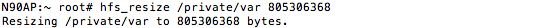
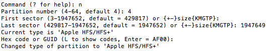

Partitioning
Now comes most dangerous part. I highly recommend to try on something you don't afraid to lose iOS on (e.g. iPhone 4) firstIn the first instance, we have to decrease size of /private/var (also known as Data) volume (HFS filesystem, not partition itself) just like iOS does before OTA-update. After that, we'll edit partition table to create 2 new partitions in space freed after decrease /private/var's partition
Resizing Data-partition's HFS
As mentioned above, we need to decrease size of Data volume. There is tiny utility written by @danzatt for this purpose - hfs_resize. Its syntax is simple:hfs_resize mount_point new_size
Calculating new size
Formula is obvious and clear (where size_os_second_os is both for System and Data partitions):new_size = original_volume_size - size_of_second_os
All values are in bytes
But there are few nuances
Before talking about them, let's check for free space:ssh root@device_ip
df -B1
Here's example of output:So, nuances:
- Obviously, space for second OS mustn't be greater than available space on Data volume. iOS 6 System partition takes about 1.2 GB, its Data partition should be at least 1.0 GB or greater
- You must leave at least 400-500 MB of free space on first Data volume
- Also, don't forget that iOS always subtract 200 MB from real available space. For example, if Settings app reports that 500 MB of space are available, the real free space is 700 MB
In this guide I'll use 768 MB as new size. 768*1024*1024 = 805306368 bytes.

This process may take a while, no worries
After it succeeds run df again:
As you see values have changed. Let's compare this info with info from Settings app. df reports 489119744/1024/1024 = 466 MB is free, but settings thinks it's only 266 MB
As I mentioned above it's OK, but please consider all these nuances when you'll do it yourself!
Editing partition table
Now we're ready to edit our partition table. Since 5.0, iOS has two partition tables:- LwVM - Lightweight Volume Manager. Stored on /dev/disk0 block device. Actual partition table (there is also eponymous kernel extension for management of disk related things incl. partition table). It's read by kernel on startup. Used on iOS only
- "Fake" GPT. Published on /dev/disk0s1 by LwVM kernel extension. Contains representation of data from LwVM in GPT format. When this table is edited, LwVM kext writes changes back to LwVM partition table. We'll mess with exactly this table
To edit GPT, modified gptfdisk can be used. At first, let's open partition table in it:
gptfdisk /dev/rdisk0s1
Print table:p Enter
Keep in mind value of logical sector size, for iPad 2 and older devices it should be 8192 bytes and for newer it's 4096 bytes
Let's request info for second partition:
i Enter 2 Enter
Write down somewhere value of partition unique GUID, it's important.
Delete second partition. No worries, we'll create new one on previous place, but with decreased size:
d Enter 2 Enter
Create new partition:
n Enter
Leave default first sector by pressing Enter:
Your size you passed to hfs_resize could be not blocksize-aligned, so it could complain: [-] Adjusting size to xyz to match next block. In this case you must use xyz value in following calculations!
Divide your new size (805306368 bytes in my case) by blocksize (we found it before when pressed p): 805306368/8192 = 98304 blocks. Now add it to default first sector (176339 in my case): 176339+98304=274643. Pass this value and leave default Hex code
Change its name back to "Data":
c Enter 2 Enter Data Enter
Make sure we did all this well:
p Enter

Now we need to restore default attributes and GUID:
x Enter a Enter 2 Enter 48 Enter 49 Enter Enter
You'll know you did it properly if Attribute value is 0003000000000000
Restore previous GUID:
c Enter 2 Enter
Copy it here. As you remember we wrote down it before deletion (745CA95D-00F7-4DD9-8CCE-5DD59F2B6A1B in my case)
Resize partition table itself to allow it hold more than 2 partitions:
s Enter 4 Enter
Now back to Basic mode:
m Enter
Create third partition, this will be System partition for our second OS:
n Enter 3 Enter Enter
To calculate last sector, we need to mount DMG image we created in previous part and open its partition in Disk Utility
It reveals partition's size in bytes (1271169024 in case of iOS 6.1.3 for N90AP). And as we did for Data partition, we need to divide this size by blocksize (8192 in this case): 1271169024/8192 = 155172 blocks. Then add obtained value to default first sector: 274644+155172 = 429816. Pass this value and leave default Hex code
Change partition's name:
c Enter 3 Enter iOS6FTW Enter
Important note: never use System as name here! It may lead to unexpected behaviour of restore daemon on pre-iOS 10.3, so you'll be unable to restore your device!
Create fourth partition, this will be Data for our second OS:
n Enter 4 Enter Enter
Calculation last sector is easier here. Just subtract 3 or 2 from default value: 1947652-3 = 1947649. If you'll chose last sector of whole storage, gptfdisk may not save changes, that happened to me few times. Pass this value and leave default Hex code:

Change partition's name:
c Enter 4 Enter iOS6Data Enter
Important note above still aplies
Make sure we did all of this well:
p Enter
Now we'll change second Data partition's attributes. Process is same as we did to first Data:
x Enter a Enter 4 Enter 48 Enter 49 Enter Enter
You'll know you did it properly if Attribute value is 0003000000000000
Finally, last step! We need to write our changes. But before check everything once again. If you feel you mistaken somewhere, it's better to start it from scratch. Just type q press Enter and start again
If you're sure you did everything properly:
w Enter Y Enter
If your device is still alive, execute sync few times:
Now make sure our new partitions appeared:
ls /dev/disk*
If you see this, my congratulations! Partitioning is done!